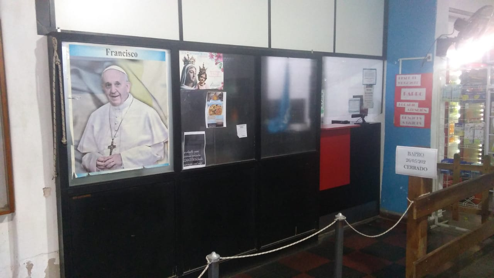
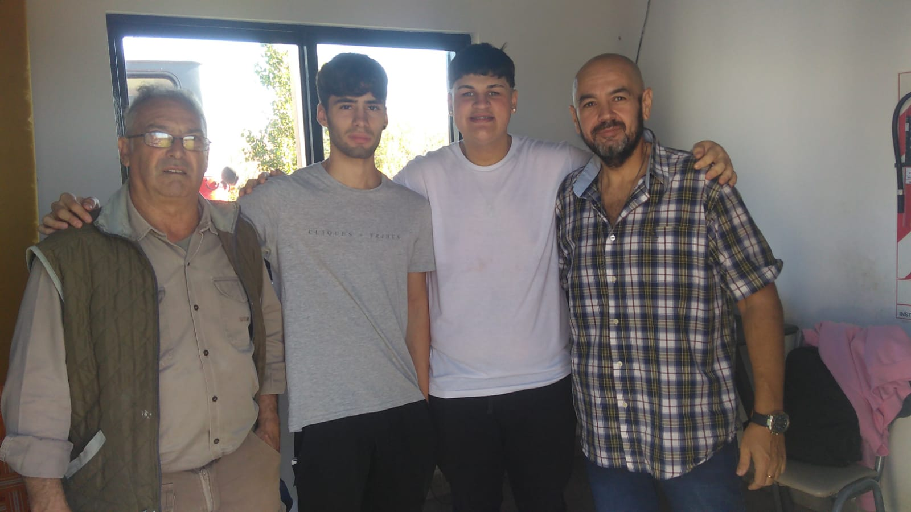
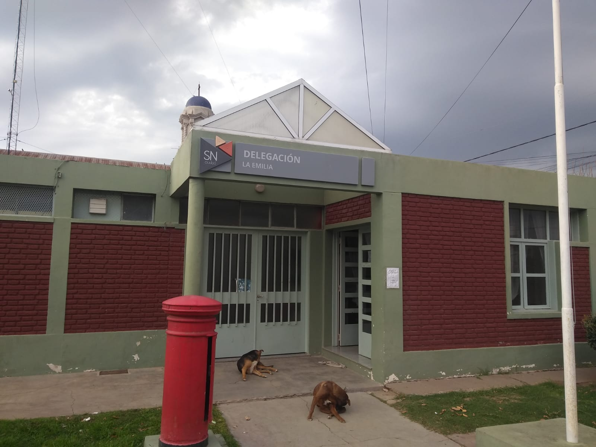

22/05/2023
Pago de impuestos en BAPRO

AMUCOOB. La Asociación Mutual Amucob informa que por el momento el servicio de Bapro ubicado en las instalaciones de la cooperativa, solo tendrá habilitado hasta nuevo aviso, el cobro para los siguientes impuestos: ARBA, AFIP Y RENAPER.
Para realizar pagos de sellados, multas y licencias de conducir pueden dirigirse a la sucursal del Banco Provincia
más cercano.
Por su parte, informan que se sigue trabajando para restituir a la brevedad el funcionamiento habitual
de PROVINCIA NET PAGOS.
22/05/2023
Informe del estado del terraplén

FODIEM. A lo largo de la semana pasada, el encargado de mantenimiento de la Planta de bombeo Miguel Ángel Ponzanesi, junto con el Tesorero de la Asociación Civil Fodiem, Sergio Piazza, estuvieron recorriendo el terraplén, tomando imágenes de video y fotográficas con el fin de brindar un informe al Director General de la Dirección Provincial de Hidráulica, que documente el estado actual del terraplén.
El informe enviado en ésta ocasión tiene fecha del día 18 de mayo del 2023 y hace referencia a algunas grietas
que presenta actualmente el terraplén y desgaste de algunas zonas a causa del paso de animales, solicitando la
reparación del mismo. “Recordamos que ya se han enviado otros informes por el mismo motivo”- sostuvo Ponzanesi.
Este pedido se hizo extensivo además al Sr Intendente municipal, contador Manuel Pasaglia.
16/05/2023
Comenzaron las pasantias de los alumnos de la Escuela Técnica Nro 5

TECNICA 5. Durante los primeros días del mes de mayo, dieron comienzo las pasantías que realizan los alumnos de 7° año de la Escuela Técnica Nro 5 de nuestra localidad. Dichas pasantías se realizan en diferentes establecimientos laborales del partido de San Nicolás y Ramallo.
El 4 de marzo comenzaron a desarrollarse las pasantías de los alumnos de 7° año, de la Escuela Técnica Nro 5 en diferentes establecimientos laborales de los partidos de San Nicolás. Algunas de las entidades que ofrecen sus espacios para dicho fin son: Leval SA, Municipalidad de San Nicolás de los Arroyos, Servicio informático del Hospital San Felipe, Asociación Civil Fodiem, Eco print, entre otras. “Empezamos con una charla formal, fortaleciendo compromiso, responsabilidad y desarrollo de habilidades en el trabajo” -Sostuvo el profesor Diego Castiglioni, encargado de coordinar dichas prácticas-. “Esto nos permite proyectar en los alumnos el valor que esto representa y darles a conocer el entorno laboral Real, así como también, contar con más experiencias y recomendaciones para tener un perfil profesional competitivo” -agregó-
16/05/2023
Reparación y renovación del sistema de alerta temprana en el Arroyo del Medio

FODIEM. Durante esta semana, se llevaron a cabo reparaciones y renovación de sensores del sistema de alerta temprana, del arroyo del medio. Estos sensores permiten monitorear los niveles de lluvia, del arroyo y avisar en caso de una crecida.
Las estaciones meteorológicas se encuentran ubicadas en los puentes de Peyrano, Guerrico, Figueredo y La Emilia
y son las encargadas de medir la altura del Arroyo del medio con el fin de brindar información continua y precisa
del caudal de la cuenca del mismo.
El principal beneficio de un sistema de alerta temprana radica en la
información que brinda y especialmente el momento que la provee. La misma puede ser utilizada para predecir
cuándo se producirá y qué tan grave será una contingencia. A su vez, el sistema permite dar aviso con
antelación para que los integrantes de la comunidad puedan protegerse a sí mismos, a sus pertenencias y tomar
acciones preventivas.
16/05/2023
Alumnos de la EP 18 salieron campeones de la etapa local en la actividad voley de los Juegos Escolares Bonaerenses

EP 18. Alumnos de 6to año de la Escuela Primaria Nro 18 de La Emilia salieron campeones en la disciplina vóley de los "Juegos escolares Bonaerenses. JEBO 2023" y clasificaron para la etapa regional que se realizará en la localidad de Ramallo.
Durante el mes de mayo se están llevando a cabo en la ciudad de San Nicolás los "Juegos escolares Bonaerenses. JEBO 2023",
con la participación de alumnos de 6° año de las escuelas primarias, tanto de gestión estatal como privada.
Alumnos de en la Escuela Primaria N°18 de la Emilia están participando en diferentes disciplinas y ya salieron campeones
en voley, clasificando de ésta manera para la etapa regional que se realizará en Ramallo en donde se dará un pase para
Mar del Plata.
De esta edición de los juegos participan un total de 200 chicos de 22 establecimientos de la zona,
siendo ésta la primera vez que alumnos de la Escuela Nro 18 compiten en dicho torneo.
15/05/2023
Nuevo horario de atención en el Registro Civil de La Emilia

REGISTRO CIVIL. El registro Civil de La Emilia anunció su nuevo horario de atención al público para nuestra localidad. Actualmente las puertas se encuentran abiertas de lunes a viernes de 8 a 13 hs. y se realizan todos los trámites que se hacen en el Registro Nacional de las personas.
“Hoy por hoy estamos en condiciones de realizar en el Registro Civil de la Emilia todos los trámites que se hacen en
ésta institución” -comentó Rosana Pérez encargada de atención al público - “Hacemos tramites de DNI, matrimonios,
certificado de defunción, denuncias de extravió y renovación, declaración jurada de domicilio, hacemos también el
certificado de supervivencia para adultos mayores, pasaporte, etc. Las denuncia de extravió de cedula y carnet de
conducir por ejemplo, , ya no se hace más en la policía, ahora se hace en el Registro Civil y todos los trámites se
atienden sin turno y por orden de llegada”
El trámite de actualización del DNI debe hacerse la primera entre
los 5 y 8 años de edad y la segunda cuando cumplen 14 años. Para la primera actualización no es necesario que los
niños y niñas concurran con los padres, pero si deben estar acompañados por un adulto, en el caso de los jóvenes de
14 años ya pueden concurrir solos para hacer la renovación. El trámite tiene un costo de $300 y solo deben traer
el DNI.
08/05/2023
Actividades del club 1° de mayo

CLUB 1° DE MAYO.El club 1° de mayo sumo nuevos talleres que se dictan en sus instalaciones de calle de Emilio Córdova esquina Alberto González. Durante la semana se dictan talleres destinados a niños y adultos de folclore y de gimnasia artística.
Si bien la actividad principal desde hace muchos años para el club 1° de mayo han sido la bochas, deporte que les ha
dado innumerables satisfacciones poniendo al club en los puestos más altos, también han apostado a sumar diferentes
actividades sociales y culturales.
Se han realizado eventos, espectáculos y diferentes talleres
destinados a la comunidad Emiliana. Actualmente y desde hace ya algunos años, se encuentra desarrollando su actividad
el taller de danzas folclóricas a cargo del profesor Omar Paez que se dicta los días lunes y jueves de 21:30 a
22:30 hs.
Por otro lado, los días martes y viernes se está desarrollando el taller de gimnasia artística
orientado a niños y adolescentes. A las 17:00 hs niños de 3 a 5 años, a las 18:00 hs alumnos de 6 a 13 años y a las
19:30 hs de 13 años en adelante.